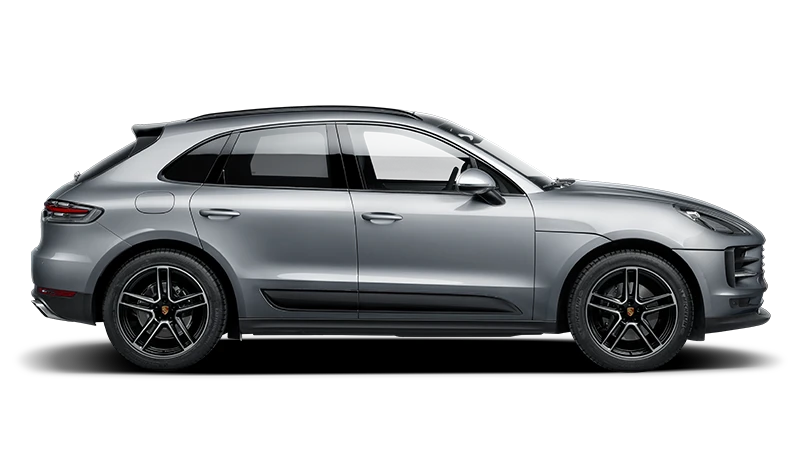
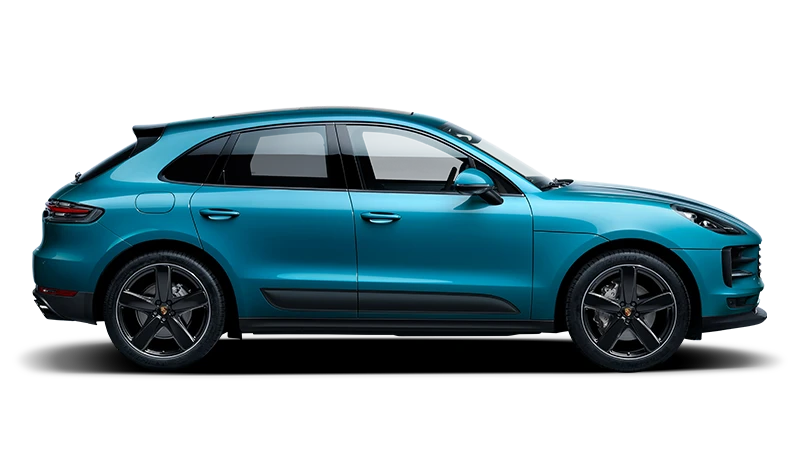

Macan
Bir SUV'nın Hikayesi
Trendleri takip etmeden ne yapacağımıza kendimiz karar veriyoruz. Biz, kendi maceramızı kendimiz yazmayı tercih ediyoruz. Sportifliği, tasarımı ve pratikliği bir arada sunan kompakt bir SUV’nın hikayesi: Macan.
İç Dizayn
Spor SUV
Art arda yeni deneyimler arıyorsunuz. Tabii ki daima genel bir bakışa sahip olmak istiyorsunuz. Sportif ön koltuklar, tipik Macan hissini aktarıyor: Yoldan yüksekte oturuyor olabilirsiniz, ama hala ona yakından bağlısınız.
Bir spor otomobil üreticisi olarak, otomobil ile sürücünün tek bir varlık oluşturması gerektiğini anlıyoruz. Macan modelinde sadece oturmazsınız; mimarisi sayesinde, ona tamamen entegre olursunuz.Kumandaların üç boyutlu yerleşimi, iç mekana bir kokpit karakterini kazandırıyor. Standart çok fonksiyonlu direksiyon ile PDK (Porsche Doppelkupplung) vites kolu ve aynı zamanda temel araç fonksiyonları arasındaki mesafe, spor otomobillerin karakteristik özelliği olan eğimli orta konsol sayesinde son derece kısa. Kontak kilidi, her Porsche’de olduğu gibi solda.
Özellikle gurur duyduğumuz bir özellik!
Porsche Communication Management (PCM) sisteminin yeni 10,9” dokunmatik ekranı. Yeni tasarım, tam HD çözünürlüğe ve kişiselleştirilebilir bir başlangıç ekranına sahip. Yeni sezgisel menü, temel fonksiyonlara daha hızlı erişim sağlıyor.
Dış Tasarım
Dinamik bir SUV
Dinamik görünüşü ile Macan modelinin bir spor otomobil olduğu ortada. Yeniden tasarlanmış arka kısmı, son derece güçlü görünüyor. Kendi imzasının altını çizen yeni karakteristik arka ışık şeridi, Porsche logosunu vurguluyor. Yeni dört noktalı fren lambaları, hem işlevsel hem de görsel olarak arka kısmı zenginleştiriyor.
Arka tekerleklerin üzerindeki geniş omuzlar, 911 modelini andırıyor. Yeni Macan modelinin yolu sıkıca kavrayan doğasının bir göstergesi daha.Yan kısmı da tipik olarak Porsche. Bu açıdan, atılmaya hazır bir yırtıcı gibi her kasın gerildiği görülebilir. Tavan hattı, bir coupé modelinde olduğu gibi arkaya doğru alçalarak yüksek aerodinamik özelliklere sahip bir spor otomobilin karakterini yaratıyor. Mühendislerimiz, buna Porsche flyline adını veriyor.
Motor
Sadece Güç Değil
Artık bu mobiliteden ibaret değil. Sadece A’dan B’ye gitmek için sürüş yapmıyoruz. Yol boyunca keşfedilecek ve yaşanacak birçok şey var. Her saniyede hayatımızın dinamik olduğunu hissetmek istiyoruz. Yolda. Ve spor otomobilimizde.
Daima mutlak performansa odaklanarak. Özgün bir spor otomobilden beklediğimiz gibi.Ama bir Porsche, güçten çok daha fazlasına sahiptir. Örneğin, aktif dört tekerlekten çekiş sistemi Porsche Traction Management (PTM) gibi: çekiş gücü, üstün direksiyon hakimiyeti mükemmel yol tutuşu, geleneksel Porsche mühendisliğinin açık birer kanıtı.
Gelişmiş Dizayn Seçenekleri

Geniş Seçenekler
Bir spor otomobil kullanmak, bize göre tüm duyularımızı harekete geçiren yoğun bir deneyimdir. Ama endorfin sadece performans ve adrenalinden kaynaklanmıyor. Yeni Macan modelinin iç mekanı, içeri girdiğiniz anda mutlu olmanızı sağlayacak.
Örneğin, opsiyonel olarak sunulan yüksek kaliteli deri iç mekan sayesinde. Veya opsiyonel GT spor direksiyonun yanında, özgün spor otomobil hissini güçlendiren eğimli orta konsol.Kulaklarınızı da bir ziyafet bekliyor: Opsiyonel spor egzoz sistemi, tipik Porsche sesini daha da güçlü bir şekilde duyuruyor. Tam yerinde bir ses deneyimi: Macan modellerinde opsiyonel olarak BOSE® Surround Ses Sistemi ve Burmester® High-End Surround Ses Sistemi sunuluyor.
Bu deneyim sırasında özgürce nefes alabilmeniz için, üç bölgeli otomatik klima kontrolü standart olarak mevcut. Sağlığınızı artırmak için daha iyi bir hava kalitesi sunan iyonizer, yeni bir opsiyonel özellik.
Motor Ve Model Seçenekleri
Macan
245 hp Maks. güç
6.7S 0-100 Km/s
225 Km/s Maks. Hız
Macan S
354 hp Maks. güç
5.3S 0-100 Km/s
254 Km/s Maks. Hız